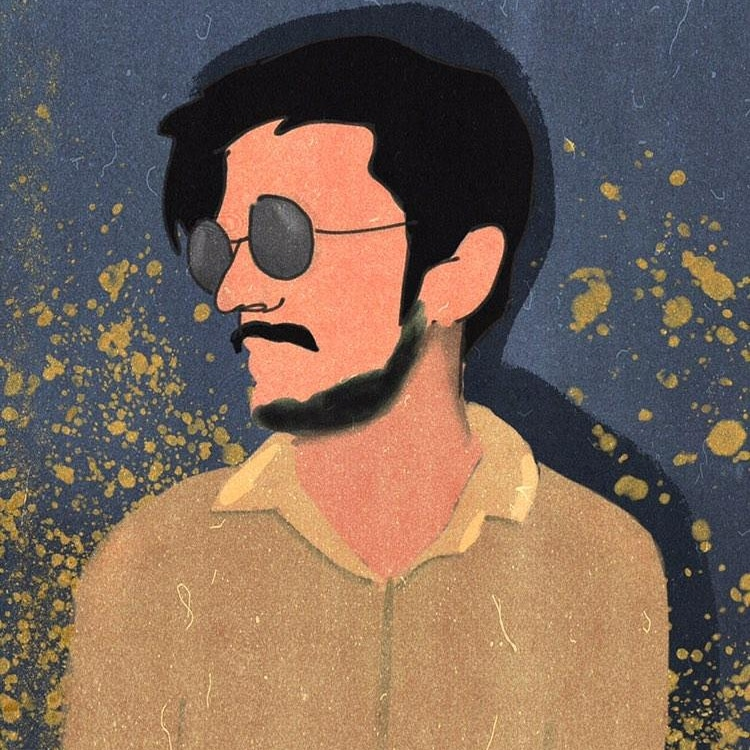

Zuhran Ahmed
Frontend Developer & Digital Media Marketer
Greetings! I'm a passionate learner and I've been into programming since I was 16. For the last 6 months I'm learning frontend development along with some web design concepts and digital media marketing. I'm learning all these on my own as a self taught learner. My current main goal is to start my career as a freelance web developer and digial media marketer.